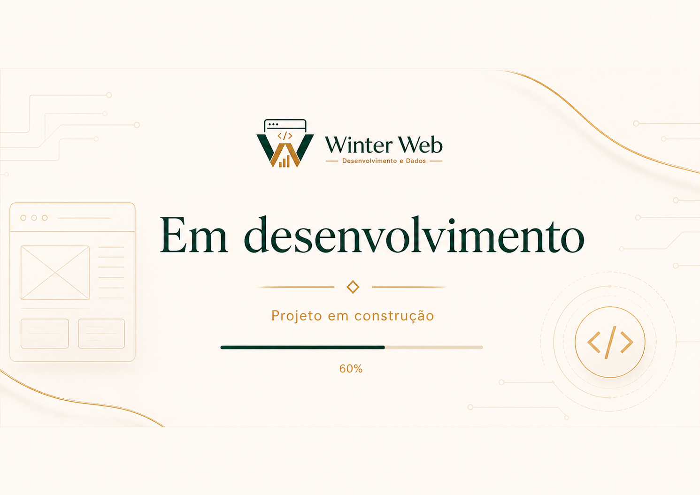

Sites, dados e soluções digitais com clareza.
Crio sites, landing pages e dashboards para negócios que precisam se apresentar melhor, vender com mais clareza e tomar decisões com dados.
Sou João Pedro Frank, profissional de tecnologia e dados — também aberto a oportunidades profissionais.
O que posso criar para você.
Sites Institucionais
Para negócios, profissionais, eventos e projetos que precisam de presença digital.
Landing Pages
Páginas focadas em divulgação, apresentação e contato pelo WhatsApp.
Dashboards e Dados
Organização de informações, planilhas inteligentes e painéis de acompanhamento.
Soluções Digitais
Catálogos, páginas de apresentação e ferramentas simples para validar ideias.
Trabalhos e provas práticas.
Alguns exemplos do tipo de solução que desenvolvo ou estruturo.
Ateliê de Joias Anderson Furich
Site para apresentar produtos, categorias e contato direto pelo WhatsApp.

Atlética de Fisioterapia da Faculdade URCAMP
Página para apresentar ações, diretoria, parceiros, produtos e formas de participação.
Dashboards e relatórios
Organização de dados para acompanhamento, análise e tomada de decisão.
Quem está por trás da Winter Web.
João Pedro Frank Winter Jr.
Desenvolvimento web • Dados • BI • Soluções digitais
Tecnologia com visão analítica e prática.
Sou formado em Matemática Bacharelado e atuo com tecnologia, desenvolvimento web, dados e soluções digitais.
Meu foco é unir estética, organização e execução para transformar ideias em soluções úteis, apresentáveis e funcionais.
Você pode chegar aqui por dois motivos.
Contratar um projeto
Para criar um site, landing page, dashboard, catálogo ou solução digital simples.
Me chamar para uma oportunidade
Para vagas ou projetos em desenvolvimento web, dados, BI, suporte ou tecnologia.
Vamos conversar?
Me chama.
Podemos falar sobre um site, uma landing page, um dashboard ou uma oportunidade profissional.